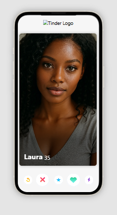

TINDER Swipe
Este proyecto es un clon de Tinder desarrollado con JavaScript y CSS. Se recrearon las animaciones de las tarjetas deslizables (swipe) y la lógica básica de coincidencias. Además, se cuidó el diseño visual para lograr una experiencia similar a la app original.